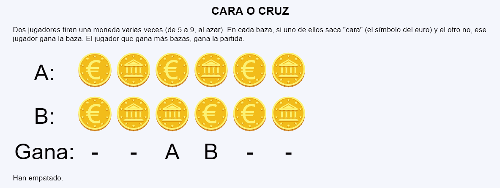
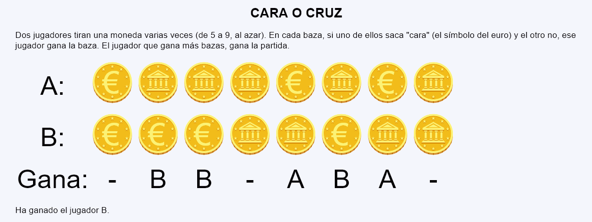

Cara o cruz - Comentarios
- Las imágenes de cara o cruz son imágenes SVG enlazadas en la página. La Cara muestra el símbolo del euro y la Cruz la fachada de un templo con columnas.
- Al actualizar la página, se mostrará una partida completa, mostrando todas las bazas, el resultado de cada baza y el resultado final.
- El número de bazas será un número al azar de 5 a 9.
- La partida se mostrará en tres filas. La primera fila mostrará en orden las monedas obtenidas por el jugador A, la segunda fila mostrará en orden las monedas obtenidas por el jugador B y la tercera fila mostrará en orden quién ha ganadado cada baza.
- Al final, se indicará quién ha ganado la partida.
- Capturas de pantalla de ejemplo:

